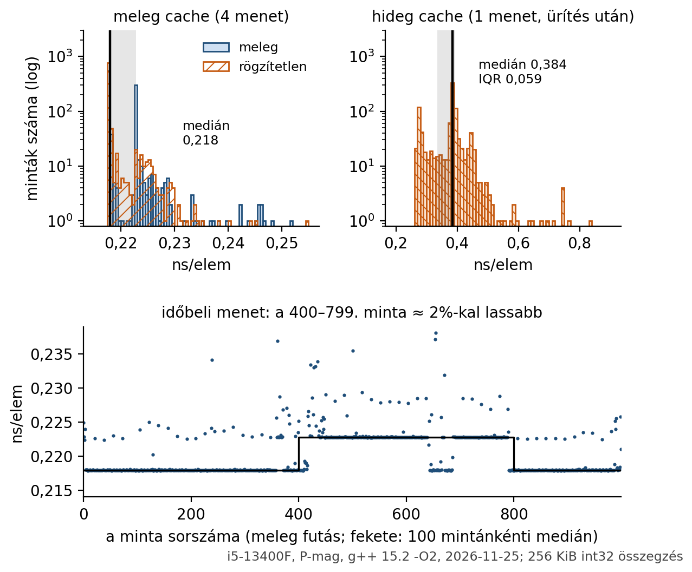
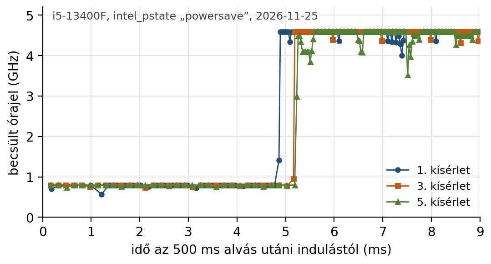
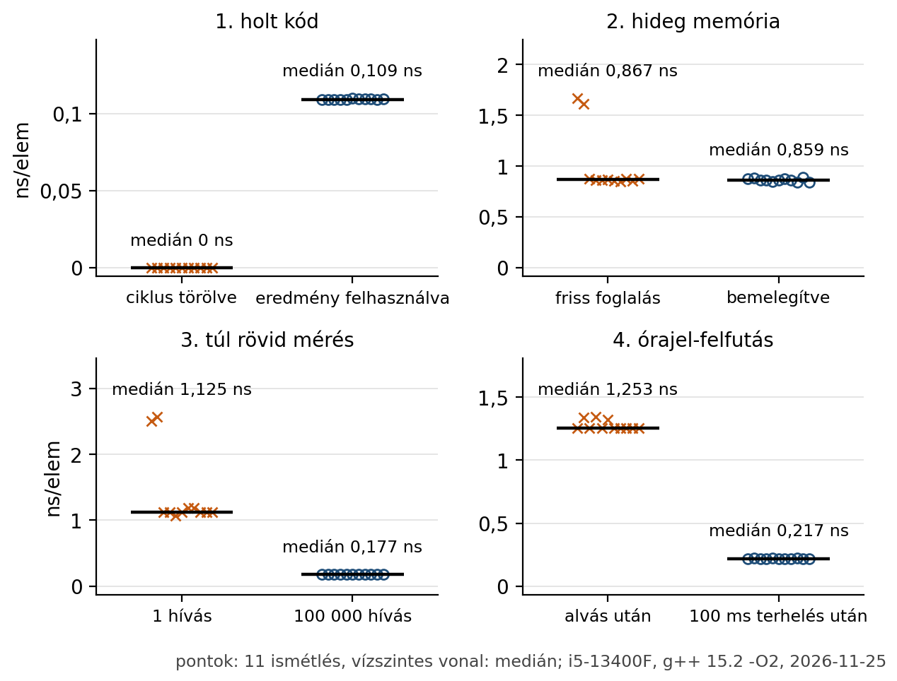

Ugyanazt a rövid, 4096 elemű összegzést mértük kétszer: egyszer rögtön 200 ms alvás után, egyszer 100 ms terhelés után. A mediánok: 1,25 ns, illetve 0,22 ns elemenként – majdnem hatszoros eltérés, pedig a program, a gép és a fordítás azonos volt. Egy harmadik mérés 0 ns-ot adott: a fordító törölte a mért ciklust. A mérés tehát nem „megnézzük a stoppert”, hanem kísérlet, amelynek hibaforrásai vannak. A könyv minden mért száma ennek az alfejezetnek a szabályai szerint készült, és a saját méréseidet is ezek szerint érdemes végezni.
Egy futásidő nem egyetlen szám, hanem eloszlás. Ha ezerszer megismételjük ugyanazt a mérést, a legtöbb eredmény egy szűk sávba esik, néhány pedig messze kilóg: közben megszakítás érkezett, lecsökkent az órajel, vagy a cache tartalma más volt.
Az ábra egy 256 KiB-os int32 tömb összegzésének
1000–1000 mérését mutatja. A bal felső panelen a „meleg” futás: a tömb
már a cache-ben van. A jobb felső panelen a „hideg”: minden minta előtt
kiürítettük a tömböt a cache-ből, és csak egyszer olvastuk végig. A
hideg mediánja 1,76-szoros, a szórása pedig több mint tízszeres. Az alsó
panel a meleg futás időbeli menetét mutatja: a 400. és a 799.
minta között a mérés jellemzően körülbelül 2%-kal lassabb. Ez megfelel
egy 100 MHz-es órajellépcsőnek (4,6 → 4,5 GHz) – ez magyarázó feltevés,
mert az órajelet mintánként nem mértük.

Figyeld meg azt is, hogy a „rögzítetlen” változat (nem volt egy maghoz kötve) alig tér el: az ütemező ebben a futásban végig a 2. CPU-n hagyta a szálat. A rögzítés hatása a gépterheléstől függ; egy tétlen gépen nem mindig látszik.
C++-ban a szokásos óra a monoton
std::chrono::steady_clock (Linuxon a
clock_gettime hívás CLOCK_MONOTONIC órája):
nem ugrik, ha a rendszeridőt átállítják. Az x86
időbélyeg-számlálója (TSC, rdtsc utasítás)
finomabb, de egy állandó referenciafrekvenciával lép (a mért gépen 2,496
GHz), nem a mag pillanatnyi órajelével. A TSC tehát
időt mér, nem magciklust; és az utasítás körüli
átrendezés ellen kerítés (lfence) kell.
Definíció. Egy óra felbontása a két különböző leolvasás közötti legkisebb különbség, többlete (overhead) pedig egy leolvasás költsége.
| Óra (i5-13400F, 100 000 egymást követő pár) | min. | medián | 99%-os |
|---|---|---|---|
steady_clock |
10 ns | 12 ns | 13 ns |
clock_gettime(CLOCK_MONOTONIC) |
10 ns | 12 ns | 13 ns |
rdtsc |
12 TSC | 14 TSC | 17 TSC |
rdtscp + lfence |
26 TSC | 30 TSC | 33 TSC |
Egy leolvasás tehát nagyjából 12 ns, azaz több tucat magciklus; a
maximum (12 µs steady_clock-nál) valószínűleg megszakítás.
Szabály: a mért szakasz legyen a többletnél legalább
százszor hosszabb, így a hiba 1% alatt marad. 12 ns-os
órához ez 1,2 µs; a rövid kernelt ciklusban ismételjük, és a teljes időt
osztjuk.
A fordító célja, hogy a program megfigyelhető viselkedése ne változzon; a futásidő nem része ennek. Ha egy eredményt senki sem használ, a kiszámítását törölheti (holt kód kiküszöbölése, dead code elimination):
void bad(const std::int32_t* a, std::size_t n, int passes) {
for (int p = 0; p < passes; ++p) {
std::int64_t s = 0;
for (std::size_t i = 0; i < n; ++i) s += a[i];
(void)s; // senki sem használja
}
}_Z3badPKimi: ; g++ 15.2 -O2 -S -masm=intel
endbr64
ret ; az egész ciklus eltűntA második csapda a konstansösszevonás: ha a bemenet
fordításkor ismert, a fordító előre kiszámolhatja az eredményt. A
következő poly egy nyolclépéses Horner-ciklus
(r = r * x + 1, hetedfokú polinom), a hívás pedig
do_not_optimize(poly(1.5)). -O3-mal a
mérőciklusban nem marad szorzás, csak a kész konstans;
-O2-vel ugyanez a ciklus még számolt – ezért kell az
assemblyt ellenőrizni minden fordítási beállításnál. A védelem a bemenet
elrejtése is:
template <class T> inline void do_not_optimize(T const& value) {
asm volatile("" : : "r,m"(value) : "memory"); // a fordító szerint „felhasználjuk”
}
template <class T> inline void do_not_optimize(T& value) {
asm volatile("" : "+m,r"(value) : : "memory"); // és „meg is változtathatjuk”
}
double x = 1.5;
do_not_optimize(x); // x értéke innen ismeretlen
do_not_optimize(poly(x)); // tényleg ki kell számolniA bench.hpp az első változatot tartalmazza, a második a
Google Benchmarkból ismert minta. Az üres beágyazott assembly nem ad
utasítást, de a fordító nem tudja, mit csinál, ezért az értéket
ténylegesen elő kell állítania. A clobber_memory() (üres
asm "memory" jelzéssel) azt üzeni, hogy a
memória megváltozhatott, így a fordító nem vonhat össze több menetet. A
volatile változó is kényszerít olvasást és írást, de minden
elérést a memóriába visz, ezzel megváltoztatja a mért kódot, és szálak
között nem szinkronizál.
| Zajforrás | Hatás | Védekezés |
|---|---|---|
| frekvenciaskálázás, turbó | alvás után lassú, terhelve is lépcsőzik | bemelegítés, órajel becslése, jegyzőkönyv |
| hideg cache, laphibák | az első menetek lassabbak | eldobott bemelegítő futások |
| szál-áttelepítés, SMT-társ | cache elvész, osztott erőforrás | taskset -c 2, tétlen gép |
| megszakítások, más folyamatok | ritka, nagy kiugrók | sok ismétlés, medián |
| laptop hőmérséklete, akkumulátor | lassuló órajel | hálózati táp, szünetek |
A 4. sor hatása látszik a bevezető mérésen. Alvás után a mag alacsony órajelen indul, és csak néhány milliszekundum múlva fut fel:

Az órajelet a program függő összeadáslánccal becsülte, mert egy ilyen lánc elemenként egy ciklust kér. Az 5 ms a gép „powersave” szabályozójánál mért érték; más beállítással eltér.
A négy tipikus csapda mérése egymás mellett:

A második panel tanulságos meglepetés: a „friss foglalás” mediánja alig lassabb, mert csak az első két ismétlés volt hideg. A magyarázatot a Kód rész ellenőrzi. A harmadik panelen egyetlen 16 elemes hívás összideje 18 ns, ennek nagy része maga az óra.
Definíció. A -kvantilis az az érték, amely alá a minták hányada esik; a medián a -kvantilis, az alsó és felső kvartilis () és (), az interkvartilis terjedelem .
Rendezett
mintánál a
-kvantilis
helye
(0-tól számozva), törtnél a két szomszéd között lineárisan
interpolálunk; így számol a NumPy és az
archkit.perf.quantile is.
A futásidő eloszlása jellemzően jobbra ferde: lassabb kiugrók vannak, gyorsabbak nincsenek. Az átlagot a kiugrók elhúzzák, a medián robusztus. A minimum a „zavartalan” futást becsli, jó változatok összevetésére, de nem a tipikus viselkedést adja meg. A könyv a mediánt és az IQR-t közli.
Két gyakorlati szabály egészíti ki ezt. A változatokat érdemes váltogatva futtatni (A, B, A, B), nem előbb tízszer A-t, majd tízszer B-t: egy lassú órajeles időszak így mindkettőt egyformán éri. És a mintaszámot a kérdés dönti el: nagy különbséghez néhány tucat ismétlés elég, néhány százalékos eltéréshez több száz kellhet, mert a bootstrap-intervallum szélessége nagyjából a mintaszám négyzetgyökével arányosan szűkül.
Mennyire megbízható a medián? Nem ismerjük az eloszlást, de a mintából szimulálhatjuk az újramérést.
Definíció. Bootstrap-intervallum: a elemű mintából visszatevéssel -szer húzunk elemet, mindegyikből kiszámítjuk a statisztikát, és a érték 2,5% és 97,5% kvantilisét vesszük 95%-os konfidenciaintervallumnak.
Két változat összevetésénél a mediánok arányára (gyorsulásra) is így készül intervallum; ha az tartalmazza az 1-et, a különbség a zajon belül van. Az intervallum a mintán belüli zajt méri; a rendszeres hibát (rossz bemelegítés, más órajel) nem veszi észre.
Továbbvitt eredmény. Mérést mediánnal és IQR-rel,
változatok arányát bootstrap-intervallummal közlünk
(archkit.perf.summarize, bootstrap_ci). Erre
épít a Memóriavezérlő, sávszélesség és mérés,
az Esettanulmány: mérésvezérelt optimalizálás
és a 2–3. záróprojekt: cache-szimulátor és
mikrobenchmark-sorozat.
A SPEC csomagok [S-SPEC] valódi programok szabványos
gyűjteménye, referenciagéphez viszonyított arányok mértani közepével. A
Google Benchmark [S-GBENCH] C++
mikrobenchmark-könyvtár, a STREAM [S-STREAM] a
fenntartható memória-sávszélességet méri négy egyszerű ciklussal. A
könyv saját, kis harnessze a code/bench/bench.hpp, amely
ugyanezeket az elveket valósítja meg:
const auto times = bench::measure([&] { // 2 bemelegítés + 11 mért futás
for (int p = 0; p < passes; ++p) {
s = sum(x.data(), x.size());
bench::do_not_optimize(s); // az eredmény „kell”
bench::clobber_memory(); // a menetek ne vonódjanak össze
}
}, 11);
const auto per = bench::scaled(times, double(passes) * x.size()); // ns/elem
std::printf("median_ns_per_elem,ok\n%.4f,%d\n",
bench::summarize(per).median, s == 4096.0f); // ellenőrzőösszegSzabályai: bemelegítés, ismétlés, do_not_optimize,
ellenőrzőösszeg (ok oszlop), szálrögzítés
(--cpu), órajelbecslés, és # kulcs: érték
jegyzőkönyvsorok a CSV elején. A jegyzőkönyv minimuma:
processzor és cache-méretek, fordító és kapcsolók, frekvenciaszabályozó,
ismétlésszám, dátum, gépterhelés.
Továbbvitt eredmény. A bench.hpp
harness és a mérési szabályok (bemelegítés, ismétlés, optimalizálás
elleni védelem, ellenőrzőösszeg, jegyzőkönyv) a könyv további méréseinek
alapja: A fordító kimenete: C-ből assembly, Lokalitás és a memóriahierarchia, Cache-szimulátor és cache-tudatos programozás, Memóriavezérlő, sávszélesség és mérés, A koherencia ára: ping-pong és false sharing, AVX és NEON a gyakorlatban, Hardveres eseményszámlálók és a perf és a 2–3. záróprojekt: cache-szimulátor és
mikrobenchmark-sorozat.
A „friss foglalás” 11 mintája (ns/elem), a mérés sorrendjében: 1,6664; 1,6122; 0,8731; 0,8628; 0,8598; 0,8670; 0,8560; 0,8500; 0,8737; 0,8538; 0,8727.
Bootstrapnél egy újraminta például a 11 elem közül visszatevéssel húzott 11 darab; a mediánja csak akkor ugrana 1,6 fölé, ha legalább hatszor hideg mintát húznánk, ami ritka. Ezért a medián intervalluma szűk marad.
import sys; sys.path.insert(0, "code")
from archkit import perf
meta, rows = perf.read_bench_csv("figures/data/ca008-csapdak.csv")
for r in rows:
x = perf.parse_samples(r["samples"])
s = perf.summarize(x)
ci = perf.bootstrap_ci(x, seed=1)
print(f"{r['trap']:8s} {r['variant']:4s} med={s['median']:.4f} IQR={s['iqr']:.4f} "
f"átlag={s['mean']:.4f} 95% CI: {ci[0]:.4f}–{ci[1]:.4f}")
print(meta["cpu"], "|", meta["build_flags"], "|", meta["governor"])deadcode bad med=0.0000 IQR=0.0000 átlag=0.0000 95% CI: 0.0000–0.0000
deadcode good med=0.1091 IQR=0.0003 átlag=0.1093 95% CI: 0.1091–0.1094
cold bad med=0.8670 IQR=0.0155 átlag=1.0043 95% CI: 0.8560–0.8737
cold good med=0.8588 IQR=0.0192 átlag=0.8617 95% CI: 0.8489–0.8740
short bad med=1.1250 IQR=0.0625 átlag=1.3864 95% CI: 1.1250–1.1875
short good med=0.1770 IQR=0.0009 átlag=0.1775 95% CI: 0.1770–0.1779
ramp bad med=1.2526 IQR=0.0355 átlag=1.2745 95% CI: 1.2520–1.3216
ramp good med=0.2169 IQR=0.0025 átlag=0.2185 95% CI: 0.2169–0.2217
13th Gen Intel(R) Core(TM) i5-13400F | -O2 -std=c++20 -Wall -Wextra -pthread | powersaveA „hideg memória” rejtélyének nyitja a memóriakezelő: a 16 MiB-os
blokk felszabadítás után sem feltétlenül kerül vissza a rendszerhez. Ezt
nem időméréssel, hanem a laphibák számlálásával ellenőrizzük
(getrusage, ru_minflt; a program minden körben
std::make_unique_for_overwrite foglalást végez, végigírja,
majd felszabadítja):
ismétlés 0: 4097 laphiba (összeg -5)
ismétlés 1: 4096 laphiba (összeg -5)
ismétlés 2: 0 laphiba (összeg -5)
ismétlés 3: 0 laphiba (összeg -5)
ismétlés 4: 0 laphiba (összeg -5)A 16 MiB pontosan 4096 darab 4 KiB-os lap. Az első két körben minden
lapra laphiba jut, utána a C könyvtár memóriakezelője ugyanazt a már
leképezett területet adja vissza (a glibc a nagy blokkok küszöbét menet
közben emeli; ez verziófüggő viselkedés). Aki hideg indulást akar mérni,
annak új folyamatban vagy mmap/munmap párral
kell foglalnia.
make -C code/bench), majd
futtasd a bench_pitfalls programot a
--mode traps --cpu 2 kapcsolókkal, a kimenetet a
csapdak.csv fájlba irányítva. Olvasd be a
perf.read_bench_csv függvénnyel. Nálad is csak az első
ismétlések hidegek?--mode noise --samples 1000 futást végezd el egyszer
tétlen gépen, egyszer közben egy videó lejátszásával. Mit változik a
medián, az IQR és a maximum?taskset nélkül és --cpu nélkül
futtatva nézd meg a cpu oszlopot: áttette-e az ütemező a
szálat?do_not_optimize sorokat vedd ki egy saját mérésből,
és g++ -S-sel ellenőrizd, mi maradt a ciklusból.do_not_optimize-ba, assembly ellenőrzése.steady_clock, és nem a naptári idő a
mérőóra?do_not_optimize, és mit nem?auto t0 = now(); for (int i = 0; i < 100; ++i) r = f(3.0); auto t1 = now();
– a program egyszer mér, r-t nem használja, és a mérés a
main elején fut.ca008-zaj-eloszlas.csv) átlagát
és mediánját hasonlítsd össze. Melyik esetben tér el jobban a kettő, és
miért?A futásidő eloszlás, nem egy szám. Az órának felbontása és többlete
van (a mért gépen steady_clock: 12 ns), a mért szakasz
legyen ennél legalább százszor hosszabb. A fordító törölheti vagy előre
kiszámolhatja a mért kódot: do_not_optimize,
clobber_memory és assembly-ellenőrzés kell. Zajforrás az
órajelváltás, a hideg cache, a laphiba, az áttelepítés és a megszakítás:
bemelegítés, rögzítés, ismétlés és jegyzőkönyv véd. A közölt érték a
medián az IQR-rel; a megbízhatóságot
és két változat arányát bootstrap-intervallum adja
(archkit.perf). A könyv minden mérése a
bench.hpp harnesszel, ezekkel a szabályokkal készült. A
bootstrap a mintavételi zajt méri, a kísérlet rendszeres hibáit nem;
ezekre a jegyzőkönyv és a többcsúcsú eloszlás vizsgálata hívja fel a
figyelmet.
Rendezve: 1,2518; 1,2520; 1,2520; 1,2520; 1,2522; 1,2526; 1,2533; 1,2534; 1,3216; 1,3367; 1,3419. Medián 1,2526. , , .
A többlet , ha a mért szakasz ns; hívás (a gyakorlatban inkább 10–100-szor több, hogy az óra felbontása se számítson).
f(3.0) konstans bemenetű: előre kiszámítható. (2)
r nem használt: a ciklus törölhető. (3) Egy mérés, szóródás
nélkül. (4) Bemelegítés nélkül a hideg cache és az alacsony órajel is
benne van. Javítás: a bemenet és kimenet do_not_optimize, a
100 helyett annyi iteráció, hogy a szakasz hosszú legyen,
bench::measure ismétléssel, ellenőrzőösszeg._, noise = perf.read_bench_csv("figures/data/ca008-zaj-eloszlas.csv")
data = {v: [r["ns_per_elem"] for r in noise if r["variant"] == v] for v in ("warm", "cold")}
for v, x in data.items():
s = perf.summarize(x)
print(f"{v}: medián {s['median']:.4f} átlag {s['mean']:.4f} "
f"arány {s['mean'] / s['median']:.3f} max {s['max']:.3f}")warm: medián 0.2180 átlag 0.2211 arány 1.014 max 0.840
cold: medián 0.3843 átlag 0.3729 arány 0.970 max 0.840A meleg futásban az átlag a medián fölött van (kiugrók, a lassabb szakasz), a hidegben alatta: ott a minták egy jelentős csoportja a medián alatt, 0,27 ns körül gyűlik, az eloszlás többcsúcsú. Ilyenkor egyetlen középérték sem elég, a hisztogramot is meg kell nézni.
r, lo, hi = perf.bootstrap_ratio_ci(data["cold"], data["warm"], n_boot=1000, seed=1)
print(f"hideg/meleg medián: {r:.3f} (95%: {lo:.3f}–{hi:.3f})")hideg/meleg medián: 1.763 (95%: 1.760–1.767)Az intervallum szűk, mert 1000–1000 mintánk van. Nem mondja meg viszont, hogy egy másik napon, más órajellel vagy más gépen ugyanez az arány jönne ki, és azt sem, hogy a hideg futás egy menete a meleg négy menetével összevethető-e (a hideg első olvasás a meleg módban nincs is jelen). Az intervallum a mintavételi zajt méri, a kísérlet tervezési hibáit nem.